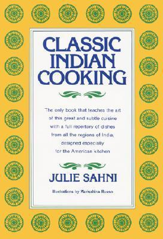
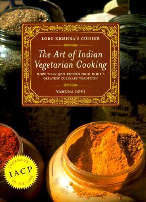
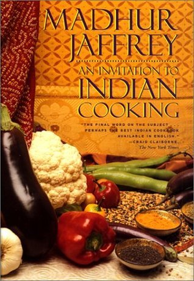
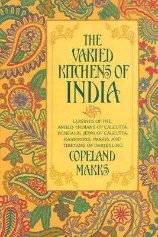
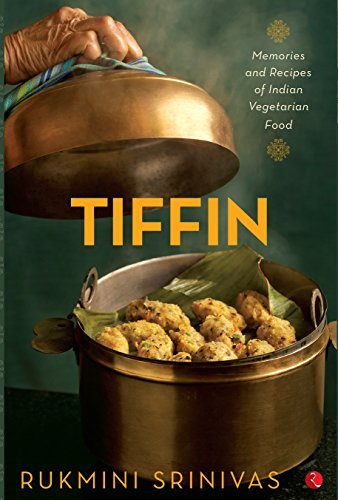
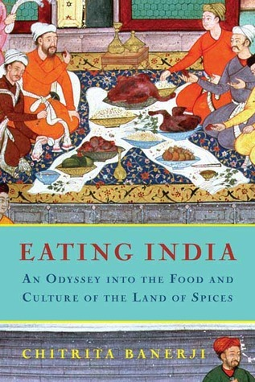

Cooking Books

Classic Indian Cooking
Julie Sahni is a renowned authority on Indian cuisine and has authored several classic cookbooks. Her most famous book is "Classic Indian Cooking" (1980), with 500+ pages of comprehensive recipes and techniques. It covers vegetarian and non-vegetarian dishes, breads, rice, desserts, and more. She also wrote "Classic Indian Vegetarian and Grain Cooking", focused entirely on vegetarian meals. Her books include detailed instructions, ingredient guides, and cultural context for Indian cooking. These are considered essential references for authentic Indian cuisine worldwide.

Lord Krishna’s Cuisine
Yamuna Devi was a renowned author of Indian vegetarian cookbooks rooted in devotional and temple-style cooking. Her most famous book is "Lord Krishna’s Cuisine" (1987), with over 500 authentic vegetarian recipes from across India. It emphasizes purity, traditional techniques, and spiritual cooking without onions or garlic. Another book,"The Vegetarian Table: India", presents simpler, accessible Indian dishes. Her work won multiple awards and is treasured by those interested in sattvic and holistic Indian cuisine.

The Varied Kitchens of India
Copeland Marks' "The Varied Kitchens of India" explores six lesser-known Indian culinary traditions. It covers recipes from Anglo-Indians, Bengalis, Jews of Calcutta, Kashmiris, Parsis, and Tibetans of Darjeeling. The book features over 200 authentic recipes along with cultural and historical context. First published in 1986, it highlights regional diversity often overlooked in mainstream Indian cookbooks. Recipes are adapted for home kitchens but retain traditional flavors and techniques. It’s a valuable resource for anyone interested in India’s multicultural food heritage.

Real Fast Indian Food
Real Fast Indian Food offers over 100 quick and easy Indian recipes for busy cooks. Written by Mridula Baljekar, it features both vegetarian and non-vegetarian dishes. The recipes are designed to be ready in 30–45 minutes without sacrificing authenticity. It includes classics like curries, snacks, rice, and chutneys with simplified methods. The book also provides ingredient guides and a menu planner for easy meal prep. Ideal for beginners or anyone wanting real Indian flavors in less time.

Tiffin By Rukmini Srinivas
Tiffin is a memoir-cookbook blending personal stories with traditional Indian vegetarian recipes. Rukmini Srinivas shares nostalgic tales from her childhood and travels across India and abroad. The book focuses on South Indian tiffin snacks, small meals, and tea-time treats. It features over 100 easy-to-follow recipes accompanied by beautiful photographs. The recipes celebrate simple, authentic flavors and traditional cooking methods. Perfect for those who love Indian vegetarian food and want a glimpse into its cultural roots.
